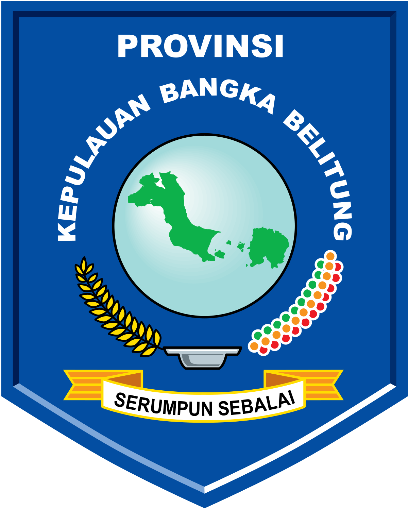

<!DOCTYPE html>
<html lang="en">
<head>
    <meta charset="UTF-8">
    <meta name="viewport" content="width=device-width, initial-scale=1.0">
    <title>Pantai Parai Tenggiri</title>
    <link rel="stylesheet" href="styles.css">
</head>
<body>


</body>
</html>
<!DOCTYPE html>
<html lang="en">
<head>
    <meta charset="UTF-8">
    <meta name="viewport" content="width=device-width, initial-scale=1.0">
    <title>Kep. Bangka Belitung</title>
    <link rel="stylesheet" href="main.css">
    <link rel="stylesheet" href="https://maxcdn.bootstrapcdn.com/bootstrap/4.5.2/css/bootstrap.min.css" />
    <script src="https://maxcdn.bootstrapcdn.com/bootstrap/4.5.2/js/bootstrap.min.js"></script>
    <script src="https://code.jquery.com/jquery-3.5.1.slim.min.js"></script>
    <script src="https://cdn.jsdelivr.net/npm/@popperjs/core@2.5.4/dist/umd/popper.min.js"></script>
    <script src="https://stackpath.bootstrapcdn.com/bootstrap/4.5.2/js/bootstrap.min.js"></script>
</head>
<body>
    <header>
        <nav class="navbar navbar-expand-lg navbar-dark navi">
        <div class="container">
            
            <span id="judul">
                <h3 style="color: white;">Kep. Bangka Belitung</h3>
            </span>
            <button class="navbar-toggler" type="button" data-toggle="collapse" data-target="#navbarNav"
                aria-controls="navbarNav" aria-expanded="false" aria-label="Toggle navigation">
                <span class="navbar-toggler-icon"></span>
            </button>
            <div class="collapse navbar-collapse" id="navbarNav">
                <ul class="navbar-nav ml-auto">
                    <li class="item">
                        <a class="link" href="#" style="text-decoration: none;">Home</a>
                    </li>
                    <li class="item">
                        <a class="link" href="#" style="text-decoration: none;">Destination</a>
                    </li>
                    <li class="item">
                        <a class="link" href="#" style="text-decoration: none;">Culinary</a>
                    </li>
                    <li class="item">
                        <a class="link" href="#" style="text-decoration: none;">About Us</a>
                    </li>
                </ul>
            </div>
        </div>
    </nav>
    </header>
    <main id="content">
        <link rel="stylesheet" href="CSS DESTINATION.css">
        <div class="header">
            <h1>Selamat Datang di Pantai Parai Tenggiri</h1>
        </div>
        
        <div class="container">
            <div class="gambar">
                
            </div>
            <div class="deskripsi">
                <h2>Tentang Pantai Parai Tenggiri</h2>
                <p>
                    Pantai Parai Tenggiri adalah salah satu objek wisata yang terletak di Kecamatan Sungai Liat, Kabupaten Bangka, Kepulauan Bangka Belitung. Tepatnya berada di Desa Sinar
                    Baru yang kira-kira berjarak 30 kilometer di sebelah utara kota Pangkalpinang. Pantai ini memiliki kontur tanah yang landai dengan ombak yang relatif kecil. Pantai ini merupakan pantai andalan yang ada di kepulauan Bangka Belitung.
                </p>
                <p>
                    Pantai Parai Tenggiri Diarsipkan 2018-06-29 di Wayback Machine. memiliki hamparan pasir putih yang masih bersih dan batu-batu granit yang alami.
                    Batu-batu tersebut mempunyai ukuran yang cukup besar dan bersifat alami, sehingga makin menambah kesan eksotiknya pantai ini
                </p>
            </div>
        </div>
        
    </main>
        
    <script src="main.js"></script>
</body>
</html>